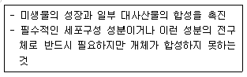
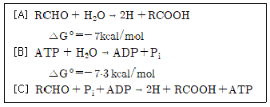
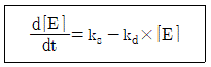
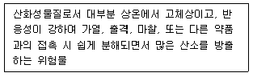
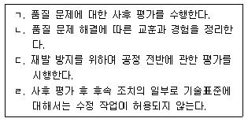
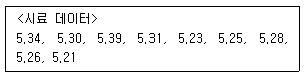
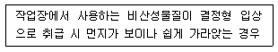

바이오화학제품제조기사 (2021-05-15 기출문제)
1과목: 미생물공학
1. 효모를 이용하여 알코올 생신 시 1 mol의 포도당으로 생산할 수 있는 최대 에탄올의 양 (g)은? 단, 균체의 생장 및 에너지 생성은 무시한다.)
- 23
- 46
- 92
- 184
(정답률: 87%)

2. 효소의 3차 구조에 영향을 미침으로써 미생물 생장속도에 영향을 주는 인자는?
- 가시광선
- 포도당 농도
- 수소이온 농도
- 용존산소 농도
(정답률: 91%)
3. 우수화장품 제조 및 품질관리기준상 제조공정관리에 대한 사항으로 볼 수 없는 것은?
- 작업소의 출입제한
- 공정검사의 방법
- 완제품 등 보관용 검체의 관리
- 사용하려는 원자재의 적합판정 여부를 확인하는 방법
(정답률: 66%)
4. 10-6 N NaOH 수용액의 pH는?
- 8
- 10
- 12
- 14
(정답률: 83%)
5. 다음 중 열처리에 의한 멸균 방법은?
- 여과멸균법
- 화염멸균범
- 가스멸균법
- 조사멸균법
(정답률: 96%)
6. 세포막의 안정성을 유지하기 위하여 고농도의 수소이온을 필요로 하며 중성 pH에서는 세포막이 파괴되어 성장할 수 없는 미생물은?
- 절대호산성 미생물
- 통성호산성 미생물
- 통성호염성 미생물
- 절대호염성 미생물
(정답률: 83%)
7. 원·부재료 품질검사에 사용되는 기체크로마토그래피(GC)와 액체크로마토그래피(LC)의 가장 큰 차이점은?
- 시료 형태
- 고정상
- 이동상
- 분해능
(정답률: 76%)
8. 우수화장품 제조 및 품질관리기준상 원료에 대한 설명으로 옳은 것은?
- 화장품의 포장에 사용되는 모든 재료를 말한다.
- 벌크 제품의 제조에 투입하거나 포함되는 물질을 말한다.
- 제조공정 단계에 있는 것으로서 필요한 제조공정을 더 거쳐야 벌크 제품이 되는 것을 말한다.
- 출하를 위해 제품의 포장 및 첨부 문서에 표시공정 등을 포함한 모든 제조공정이 완료된 화장품을 말한다.
(정답률: 79%)
9. 축합반응에 의하여 4개 분자의 포도당으로부터 만들어진 올리고당의 분자량은? (단, 포도당의 분자량은 180이다.)
- 666
- 720
- 702
- 684
(정답률: 86%)
10. 생산균주를 주생산균주와 작업생산균주로 구분할 때 각 균주에 대한 설명으로 틀린 것은?
- 주생산균주는 제품 생산을 위한 공정에 사용되는 균주이다.
- 주생산균주는 생산 일정에 맞추어 활성화되어 있어야 한다.
- 작업생산균주는 생산성 및 수율 향상 연구개발에 사용되는 균주이다.
- 작업생산균주는 개선된 공정, 신제품 공정에 사용되는 균주이다.
(정답률: 81%)
11. 생물반응기의 계측기구가 갖추어야 할 조건으로 가장 거리가 먼 것은?
- 정확성
- 내구성
- 안정성
- 투명성
(정답률: 89%)
12. 균체로부터 대부분의 물을 제거하여 세포의 생리활동을 정지시키는 균주의 보존방법으로 장기간보존이 가능하기 때문에 균주 보존기관에서 널리사용하고 있는 균주 보관법은?
- 증류수 보존법
- 동결건조 보존법
- 계대배양 보존법
- 냉동 보존법
(정답률: 96%)
13. 24 h의 배가시간을 갖고 있는 세균의 비성장속도(h-1)는?(오류 신고가 접수된 문제입니다. 반드시 정답과 해설을 확인하시기 바랍니다.)
- 0.100
- 0.289
- 0.417
- 0.514
(정답률: 90%)
14. Aspergillus oryzae 로부터 α-amylase를 생산하는 배지를 고안하기 위해 질소원을 사용할 때 다음 중 적합하지 않은 것은?
- 카제인 분해물(Casein Hydrolysate)
- 주석산암모늄(Ammonium Tartrate)
- 펩톤(Peptone)
- 옥수수시럽(Corn Syrup)
(정답률: 78%)
15. 그람 음성균의 세포벽에 대한 설명으로 틀린 것은?
- 세포막 바깥층에 외막(Outer Membrane)이 존재한다.
- Periplasm에는 펩티도글리칸(Peptidoglycan) 층이 있다.
- Amino Sugar 함량이 높다.
- 그람 염색 시 적색으로 된다.
(정답률: 82%)
16. 미생물의 성장과 대사산물 생성과의 관계에 대한 설명으로 틀린 것은?
- 혼합 성장 관련 산물 생성은 완만한 성장기 또는 정지기에 일어난다.
- 비성장 관련 산물의 생성은 성장 속도가 0인 정지기 동안 진행되고 비생산 속도는 세포의 비성장 속도에 비례한다.
- 젖산은 혼합 성장 관련 산물의 예이고, 페니실린은 비성장관련 산물의 예이다.
- 성장 관련 산물은 미생물의 성장과 동시에 생산된다.
(정답률: 70%)
17. 다음 [보기]가 설명하는 미생물의 영양소는?

- 탄소원
- 질소원
- 무기염류
- 생장인자
(정답률: 78%)
18. 직경 90 mm 페트리디쉬에 분산도말법으로 균주를 배양할 때 단일콜로니로 관찰하기에 적당한콜로니 수로 가장 적절한 것은?
- 10~20
- 30~60
- 100~200
- 300~500
(정답률: 79%)
19. 다음 중 일반적으로 비성장속도가 가장 빠른 미생물은? (단, 각 미생물의 배양 시 저해요소는 없다고 가정한다.)
- 맥주 효모
- 대장균
- 고초균
- 황국균
(정답률: 90%)
20. 표준 균주 관리 목록 양식에 포함될 내용으로 적합하지 않은 것은?
- 보관장소
- 보관기간
- 보관형태
- 보관수량
(정답률: 65%)
2과목: 배양공학
21. 산업적으로 이용되는 미생물과 그 산물 또는 용도의 연결이 틀린 것은?
- Clostridium - 유기용매
- Streptomyces - 항생제
- Bacillus - 카로틴
- Candida - 가축 사료
(정답률: 68%)
22. 다음 중 통기교반에 관계되는 발효조의 기계요소와 거리가 먼 것은?
- 임펠러(Impeller)
- 방해판(Baffle)
- 공기분산 유입관
- Glass wool
(정답률: 89%)
23. 발효식품과 해당 발효에 관여하는 주작용(1차적) 미생물의 연결이 틀린 것은?
- Cheese - Aspergillus 속
- Yogurt - Streptococcus 속
- Wine - Saccharomyces 속
- Natto - Bacillus 속
(정답률: 80%)
24. 다음 중 고상발효에 대한 설명으로 틀린 것은?
- 사상곰팡이 발효에 주로 이용된다.
- 간장, 된장 발효 같은 식품 생산에 주로 이용된다.
- 고체 반죽의 수분 함량은 90% 이상을 유지한다.
- 교반이 잘 되지 않아 배지가 불균일하다.
(정답률: 84%)
25. 생산량 산정을 위한 수주 물량 검토 시확인해야할 세부 사항이 아닌 것은?
- 생산품 형태 및 규격
- 납품 수량 및 납기일
- 납품 형태 및 취급자 정보
- 생산 인력의 성별
(정답률: 95%)
26. 단백질 암호화 서열이 300개의 base로 구성된 mRNA로부터 합성될 수 있는 단백질의 대략적인 분자량(dalton)은? (단, 아미노산 평균분자량은 150 dalton으로 가정한다.)
- 13000
- 18000
- 20000
- 30000
(정답률: 71%)
27. 해당과정(glycolysis) 중 ATP를 소모하면서 비가역적인 반응을 촉매하는 효소는?
- Aldolase
- Enolase
- Hexokinase
- Glucose phosphate isomerase
(정답률: 87%)
28. 구연산 발효에 대한 설명 중 틀린 것은?
- 구연산은 혼합생장관련 산물 생성 형태로 세포성장이 멈춘 후 질소와 인산염이 제한된 조건에서 생산이 이루어진다.
- 구연산은 2차 대사산물이기 때문에 매우 특수한 조건에서 높은 농도로 생산된다.
- Aspergillus niger 미생물은 당밀 또는당 용액에서 구연산을 생산하기 위한 미생물로 가장 널리 사용된다.
- 발효과정 중 용존산소는 고농도로 유지해야 한다. 만일 산소공급이 잠시 중단되면 구연산 생산성은 비가역적으로 급격히 감소될 수 있다.
(정답률: 79%)
29. 다음의 세포영양소 중 다량영양소(macronutrient)에 해당하는 것은?
- 비타민, 호르몬과 같은 생장인자 (growth factor)
- 주요 대사과정에 작용하는 효소의 보조인자
- 세포가 주로 10-4 M 농도 이하로 필요로 하는 영양소
- 종속영양주(heterotroph) 세포가 에너지원으로 이용하는 영양소
(정답률: 91%)
30. 아미노산인 lysine 생합성 경로에서, 전구체와 산물의 관계가 옳게 짝지어진 것은?
- Pyruvate → Lysine
- Oxaloacetate → Lysine
- α-Ketoglutarate → Lysine
- Erythrose-4-phosphate → Lysine
(정답률: 60%)
31. 산업적으로 유전자 조작된 세포 배양 시 플라스미드 불안정성을 극복할 수 있는 방법은?
- 최적의 C/N율을 조절하여 최적플라스미드 발현 조건을 만들어 과량의 유전자 산물을 얻는다.
- 선택압력으로 항생물질인 penicillin이나 ampicillin을 사용하여 유전자의 산물을 과량 얻는다.
- 세포성장기와 산물생산기를 구분한 회분식 2단계 발효로 삽입된 유전자로부터 과량의 산물을 얻을 수 있다.
- 복제 가능한 플라스미드 수가 10 이상의 안정된 복제수를 가진 유전자 조작 균주를 이용하여 과량의 유전자 산물을 얻을 수 있다.
(정답률: 58%)
32. 다음 중 미생물이 발효(fermentation)를 통해 생산할 수 있는 물질이 아닌 것은?
- 아세트아미노펜(acetaminophen)
- 아세톤(acetone)
- 부탄올(butanol)
- 프로피온산(propionic acid)
(정답률: 65%)
33. 세린(serine)의 등전점은 얼마인가? (단, pKa1 = 2.2, pKa2 = 9.15)
- 5.68
- 6.78
- 6.95
- 11.35
(정답률: 86%)
34. 유전자 조작된 미생물을 이용하여 재조합 단백질을 생산할 때 흔히 일어나는 유전적 불안정성(genetic instability)에 대한 설명으로 틀린 것은?
- 플라스미드에 존재하는 복제 수 (copy number)가 감소하는 것을 말한다.
- 미생물의 계대수가 증가하면 일어날 수 있다.
- Product의 생성이 감소하게 된다.
- 연속배양보다 회분식배양에서 잘 일어난다.
(정답률: 81%)
35. 기본 분자구조와 그에 따른 유사한 효능에 따라 분류라 때, 현재 사용되고 있는 항생물질 그룹이 아닌 것은?
- Macrolide 계
- β-Lactam 계
- Tetracycline 계
- Lipopolysaccharide 계
(정답률: 85%)
36. 연속배양(chemostat)의 장점에 대한 설명으로 옳은 것은?
- 오염의 문제가 적다.
- 미생물이 유전적으로 안정화된다.
- 이차대사산물의 생산에 적합하다.
- 생육속도가 빠른 미생물 배양에 적합하다.
(정답률: 84%)
37. 유가식 배양에서 시스템에 회분식 배양을 시작한지 10 시간 후, 영양소 공급액이 200 mL/h로 유입되기 시작하였으며 그 후 2 시간이 지났을때 배양액 부피가 2000 mL가 되었다. 유가식 배양 초기의 배양액의 부피는 몇 mL인가?
- 1600
- 1400
- 1200
- 1000
(정답률: 79%)
38. Scale-up이란 실험실 규모의 결과를 공장 규모의 산업적 생산으로 전환시키는 과정이다 다음 중 발효 sclale-up을 할 때 일반적으로 고려하여야 할 인자가 아닌 것은?
- 산소전달계수(KL·a)
- 통기량
- 교반날개의 선단속도
- 단위액량 당 교반 소요 동력
(정답률: 59%)
39. 탄소계 골격물질과 환원력을 제공하는 대사경로는? (문제 오류로 가답안 발표시 3번으로 발표되었으나, 확정답안 발표시 모두 정답처리 되었습니다. 여기서는 가답안인 3번을 누르면 정답 처리 됩니다.)
- ED 경로
- EMP 경로
- HMP 경로
- TCA 경로
(정답률: 91%)
40. HMP 경로에 대한 내용 중 틀린 것은?
- 혐기성 대사이다.
- 3, 4, 5, 7 개의 탄소원자를 가지는 저분자 유기화합물을 만든다.
- HMP 경로에서 생성된 erythrose-4-phosphate는 트립토판, 페닐알라닌, 타이로신의 주요 전구체이다.
- HMP 경로로부터 생성된 ribose-5-phosphate는 히스티딘 합성의 주요 전구체이다.
(정답률: 88%)
3과목: 생물반응공학
41. 세포의 분리에 사용되는 방법이 아닌 것은?
- 여과
- 원심분리
- 응집
- 추출
(정답률: 79%)
42. 막분리 장치에서 공급물 중 A의 함량이 0.4이고, 유입압력과 유출압력의 비가 0.5라면 투과물 내 A 조성의 최고치는 얼마인가?
- 0.4
- 0.6
- 0.8
- 1.2
(정답률: 70%)
43. 발효액으로부터 효소를 분리하고 정제하는데 수반되는 주요 단계 중 가장 처음에 수행하여야 할 단계는?
- 건조를 통한 생성물의 제조
- 오염 화학 물질의 정제 또는 제거
- 생성물의 1차 분리 또는 농축과 대부분의 수분 제거
- 세포, 불용성 입자 및 거대분자 같은 고체의 분리
(정답률: 82%)
44. 다음 중 화산암의 일종인 여과조제인 것은?
- 사암
- 역암
- 규조토
- 퍼라이트
(정답률: 72%)
45. 단백질 의약품, 효소 제품과 같이 제품 성분 중 단백질의 활성 유지가 필요한 제제를 건조하는데 적합한 건조기는?
- 회전통건조기
- 동결건조기
- 기류수송식 건조기
- 회전농축기
(정답률: 83%)
46. B+가 결합되어 있는 양이온교환수지 2g에 A+형태의 용질이 100 mM 들어있는 용액 100 mL를 가하였다. 이온교환 평형이 이루어진 후 용액 중의 A+의 잔류농도는 40 mM이었다. 이온교환수지 단위질량당 이온교환용량이 5meq/g 이라고 할 때 용질 B+의 이온교환평형상수는 약 얼마인가? (단, 평형상수 값은 A+와 비교하였을 때 이온교환수지의 B+에 대한 상대적인 선택도 (selectivity) αB/A를 의미한다.)
- 0.44
- 0.67
- 1.0
- 1.5
(정답률: 51%)
47. 막 분리 공정에서 막 내부가 병원성 미생물에 의한 오염이 우려될 때 진행되는 살균단계에 사용 할 수 있는 살균제가 아닌 것은?
- EDTA
- NaOCl
- H2O2
- Sodium bisulfite
(정답률: 78%)
48. 다음 중 농도분극 현상과 가장 관계가 먼 것은?
- 한외여과
- 역삼투
- 역확산
- 흡착
(정답률: 70%)
49. 지정 폐기물의 확인을 위해 폐촉매, 폐흡수제 또는 폐배지 등에 함유되어 있는 기름의 양을 측정하기 위해 사용되는 용매는?
- 메탄올
- 노말헥산
- 클로로포름
- 벤젠
(정답률: 76%)
50. 멤브레인 분리정제 공정 중 한외여과가 적용되는 공정으로 가장 거리가 먼 것은?
- 단백질의 농축
- 완충액 교환
- 탈수
- 바이러스 제거
(정답률: 55%)
51. 중력에 의해 액체에서 고체를 침강시키는데 작용하는 힘은 중력, 항력, 부력이다. 입자가 종단침전 속도에 도달할 때 입자에 작용하는 힘의 평형상태를 타나낸 식으로 옳은 것은?
- 중력 - 항력 - 부력 = 0
- 항력 - 중력 - 부력 = 0
- 부력 - 항력 - 중력 = 0
- 중력 + 항력 + 부력 = 0
(정답률: 96%)
52. 40 w%의 고형질 성분을 갖는 항생물질의 원료용액이 분무 건조기에 도입되어 5%의 수분을 갖는 건조된 항생물질을 2Kg/min씩 얻는다. 분무건조기에서 증발 제거되는 수분량(Kg/min)은?
- 1.2
- 1.9
- 2.75
- 3.2
(정답률: 63%)
53. 다음은 polyacrylamide 젤을 이용하여 변성 조건에서 전기영동을 하는 이유에 대한 설명으로 틀린 것은? (문제 오류로 실제 시험에서는 3, 4번이 정답처리 되었습니다. 여기서는 3번을 누르면 정답 처리 됩니다.)
- 여러 가지 성분으로 이루어져 있는 복합체 (효소, ribosome, virus 등)를 해체시켜 분석 가능하다.
- 세포막과 같은 불용성의 생체물질을 변성 유도체 혹은 계면활성제로 용해시켜분해할 수 있다.
- 당단백질은 SDS등과 같은 강한 이온성 계면활성제를 사용하여 단백질의 분자량 측정이 가능하다.
- 단백질을 환원시켜 disulfide 결합을 끊어 구성 peptide의 조성을 알 수 있다.
(정답률: 91%)
54. 초음파 진동기를 이용하여 세포를 파쇄 할 경우에 대한 설명으로 틀린 것은?
- 초음파 분쇄는 열 발생 문제가 있어서 열에 민감한 효소를 변성시킬 수 있다.
- 그람음성세균이 그람양성세균보다 더 쉽게 깨진다.
- 본체에서 발생된 초음파는 세포 현탁액에 잠겨 있는 티타늄 전극에서 파동 에너지가 기계적 에너지로 전환된다.
- 긴 균사체로된 사상곰팡이 세포 파쇄에 가장 효과적이다.
(정답률: 75%)
55. 일반적으로 제약 생성물에 사용되며, 작은 회분식으로 고가 물질을 얻는데 있어서 생성물 손실과 열 변성을 최소화 할 수 있는 건조기는?
- 진공판 건조기
- 유압컨베이어 건조기
- 회전통 건조기
- 분무 건조기
(정답률: 60%)
56. 겔 전기영동 시 단백질의 3차구조의 복잡성과 이 황화다리결합(disulfide bond)을 끊는데 사용하는 화학물질은?
- SDS - Coomassie brilliant blue
- Mercaptoethanol - Acrylamide
- SDS - Mercaptoethanol
- Coomissie brilliant blue Acrylamide
(정답률: 84%)
57. 탈염(desalting)을 위해 사용되는 크로마토그래피는?
- 이온교환 크로마토그래피
- 소수성 크로마토그래피
- 친화성 크로마토그래피
- 젤여과 크로마토그래피
(정답률: 66%)
58. 여과보조제로 사용되는 규조토의 특성이 아닌 것은?
- 공극률이 0.85 정도 이다.
- 여과속도를 증가시켜 줄 수 있다.
- 여과층의 공극을 증가시켜 준다.
- 최초의 입자 누출이 쉽게 이루어지게 한다.
(정답률: 67%)
59. 등전집속(isoelectric focusing)과 관계없는 내용은?
- 전기장
- 단백질
- pH 경사(gradient)
- 속도 지배적(rate controlled) 분리
(정답률: 76%)
60. 효모 Saccharomyces cerevisiae 당단백질의 주요 당쇄 성분은?
- 포도당(glucose)
- 만노스(mannose)
- 수크로스(sucrose)
- 시알산(sialic acid)
(정답률: 83%)
4과목: 생물분리공학
61. HPLC에 사용되는 검출기 중 광학적 원리를 이용하는 검출기가 아닌 것은?
- 자외선-가시광선 검출기
- 형광 검출기
- 굴절률 검출기
- 전기화학 검출기
(정답률: 84%)
62. 알데하이드의 산화반응 [A]와 ATP의 가수분해 반응 [B]의 표준 자유 에너지 변화가 [보기]와 같을 때, [C] 반응의 표준 자유 에너지 변화량 (ΔGo, kcal/mol)은?

- 0.3
- 14.3
- -0.3
- -14.3
(정답률: 78%)
63. 분광광도계에서 Beer-Lambert 의 법칙이 성립하기 위한 조건이 아닌 것은?
- 입사광은 단색광이어야 한다.
- 용액 및 용매 분자에 의한 산란이 없어야 한다.
- 용액 계면에서의 반사, 기기 내부의 미광이 없어야 한다.
- 용액 농도가 변화함에 따라 용질 화학종의 용존 상태가 변화해야 한다.
(정답률: 78%)
64. 고정화효소 사용 시 내부 확산속도의 저하로 효소반응이 제한을 받을 때, 고정화 효소의 진정한 고유 반응속도 상수를 구하기 위한 방법은?
- 고정화 담체로 큰 크기의 입자를 사용한다.
- 확산 제한 상태로 정치 반응을 유지시킨다.
- 높은 농도의 기질을 사용한다.
- 반응 온도를 낮춘다.
(정답률: 74%)
65. 불균일 화학촉매를 반응물에서 분리할 때 사용할 수 잇는 방법으로 틀린 것은?
- 원심분리
- 여과
- 추출
- 응집
(정답률: 72%)
66. 고정화효소와 고정화되지 않은 자유효소와의 차이점에 관한 설명으로 옳은 것은?
- 고정화효소는 일반적으로 안정성이 더 높다.
- 고정화효소에 비해 자유효소는 재사용을 할 수 있어 항상 경제적이다.
- 온도에 대한 안정성은 고정화효소가 더 작다.
- 고정화효소는 pH에 대한 민감성이 증가한다.
(정답률: 80%)
67. 다음 중 회분식 전환 반응기를 이용하여 반응속도를 측정하는 방법에 대한 설명으로 틀린 것은?
- 반응물이 초기에 투입되고 일정 시간이 지나 반응이 종료되면, 반응물과 생성물의 농도를 측정하게 된다.
- 반응 중에 일정 간격으로 시료를 채취하는 것이 가능하다면 채취, 분석하여 반응 경과를 관찰한다.
- 반응물과 생성물의 농도 변화 추이에 따라 계산된 반응의 정도를 바탕으로 반응속도를 결정한다.
- 반응물이 생성물로 전환되는 시간을 체류시간이라고 한다.
(정답률: 76%)
68. 세포 내 효소양의 변화율 (d[E]/dt)은 다음과 같이 나타낼 수 있다. 정상상태 하에서 효소 합성반응률 상수(ks)의 값이 2x10-5 mM/s 이라면, 효소의 농도가 0.1 mM 일 때 효소 분해반응률 상수(kd)의 값은 얼마인가?

- 10-5s-1
- 2×10-4s-1
- 8.5 mM/s
- 13.1 mM/s
(정답률: 80%)
69. 교반탱크 반응시 설계 시 전단민감성(shear sensitivity)을 고려해야 하는 내부 장치는?
- 원환
- 내부 코일
- 임펠러
- 분사기
(정답률: 87%)
70. Michaelis-Menten 효소동역학 반응속도 형식을 따르는 효소반응에 관한 설명으로 틀린 것은?
- 낮은 기질농도에서 반응속도는 기질농도에 비례한다.
- 기질의 농도와 Km이 일치할 때 효소의 반응속도는 최대 속도의 1/2이다.
- 높은 기질 농도에서 효소는 기질에 의해 포화되며, 반응속도는 기질의 농도에 의존하지 않는다.
- 효소-기질 상호작용의 붕괴는 생성물 생성에 영향을 주지 않는다.
(정답률: 83%)
71. 효소의 유도-맞춤 모형(induced-fit model)에 대한 설명으로 옳은 것은?
- 효소 적용은 적합한 억제제에 의해 결합되어 촉진된다.
- 기질의 모양에 맞추기 위하여 활성자리의 모양은 유연성을 가지며 그 모양이 변형될 수 있다.
- 활성자리는 입체성이 다른 자리의 모양을 갖는다.
- 활성자리의 모양은 견고하기 때문에 완벽하게 상보성을 갖춘 기질만 결합할 수 있다.
(정답률: 70%)
72. 불균일 촉매를 이용하는 산업 공정이 아닌 것은?
- 하버 합성법
- 연실법
- 오스트발트 공정
- 촉매 변환기
(정답률: 55%)
73. 효소고정화를 위한 담체의 재질 중 고정화 형태가 다른 것은? (문제 오류로 실제 시험에서는 1, 2번이 정답처리 되었습니다. 여기서는 2번을 누르면 정답 처리 됩니다.)
- Ca-Alginate
- Activated carbon
- Iodoacetyl cellulose
- CNBr-activated sephadex
(정답률: 81%)
74. Amylase 에 의한 전분 가수분해 반응에서 덱스트린은 이 효소 반응의 경쟁적 저해 물질이다. 이 반응의 Michaelis-Menten 상수 Km은 3.0 mg/mL이고, 저해분해상수 Ki는 8.0 mg/mL이다. 이 효소 반응 용액의 덱스트린 농도가 4 mg/mL일 때, amylase에 의한 전분 가수분해 반응의 겉보기 Km(amylase)값은 얼마인가?
- 2.0
- 4.5
- 8.0
- 10
(정답률: 47%)
75. 고분자의 분리·정제에 많이 사용되는 크로마토그래피 방법이 아닌 것은?
- 젤(gel) 크로마토그래피
- 이온교환 크로마토그래피
- 친화성 크로마토그래피
- 가스 크로마토그래피
(정답률: 85%)
76. 촉매 지지체에 대한 설명으로 틀린 것은?
- 모든 지지체는 활성을 갖지 않는다.
- 표면적이 넓은 지지체가 많이 사용된다,
- 열적 안정성이 높은 지지체가 많이 사용된다.
- 가공성이 용이한 지지체가 많이 사용된다.
(정답률: 78%)
77. Lactobacillus delbrueckii에 의한 포도당으로 부터 젖산 발효 시 기질에 대한 실제 산물 수율계수(YP/S)가 0.4 일 때, 젖산 100 g/L를 생산하기 위한 포도당 기질의 농도(g/L)는?
- 250
- 300
- 350
- 400
(정답률: 63%)
78. 효소-기질 복합체의 설명으로 틀린 것은?
- 효소와 기질이 결합할 때 활성에너지가 낮아진다.
- 효소-기질 복합체에서 효소는 기질의 활성자리라는 특정 구역에 결합된다.
- 효소와 기질의 최대 결합에너지는 가장 불안정한 반응 중간체인 전이상태 사이에서 일어난다.
- 효소와 기질 사이에 많은 수의 약한 결합이 형성될 때 자유에너지가 방출된다.
(정답률: 64%)
79. 효소 반응 후 효소와 반응 생성물이 분리되어 효소의 재사용이 가능할 수 있는 이유는?
- 반데르발스 힘
- 공유결합
- 배위결합
- 금속결합
(정답률: 90%)
80. 흡착법에 의한 효소 고정화 기술에 대한 설명 중 틀린 것은?
- 결합의 세기가 약하다.
- 고정화의 과정이 간단하다.
- 일정한 담체에 많은 효소를 흡착시킬 수 있다.
- 고정화 상태가 용액의 온도에 매우 민감하다.
(정답률: 65%)
5과목: 생물공학개론
81. LMO연구시설의 설치·운영 신고 및 LMO의 개발·실험의 승인에 대한 설명 중 틀린 것은?
- 1 등급 연구시설의 설치 및 운영은 과학기술정보통신부장관에게 신고하여야 한다.
- 2 등급 연구시설의 설치 및 운영은 과학기술정보통신부장관에게 신고하여야 한다.
- LMO 연구시설의 설치 운영에 대한 허가를 받거나 신고한 자가 포장시험 등 환경 방출과 관련된 실험을 하고자 하는 경우에는 과학기술정보통신부장관의 승인을 얻어야 한다.
- 3 등급 및 4 등급의 연구시설인 경우 환경위해성 및 인체위해성 관련 연구시설은 질병관리청장의 허가를 받아야한다.
(정답률: 80%)
82. 황린(yellow phosphorus)의 저장과 취급법으로 가장 거리가 먼 것은?
- 화기를 절대 피한다.
- 고온체 등과 함께 보관한다.
- 직사광선을 피한다.
- pH 9 정도의 물 속에 저장한다.
(정답률: 87%)
83. 아세트알데하이드 등과 같은 알데하이드류 물질의 유출 시에 가장 적합한 방재 약품으로 옳은 것은?
- 묽은 염산
- 황산 수용액
- 하이포염소산염
- 유화제
(정답률: 65%)
84. 생산라인에 배치된 실습생이 외관검사를 수행하는 과정에서 양품을 불량품으로 판정하는 비율이 10%, 불량품을 양품으로 판정하는 비율은 20%이다. 공정의 불량률이 4%일 때 실습생이 어떤 제품을 불량으로 판정하였다면, 그 제품이 실제로 불량일 확률은 약 몇 %인가?
- 25%
- 32%
- 75%
- 97%
(정답률: 67%)
85. 시장에서 판매되거나 임상시험에 사용된 의약품은 반드시 승인제조절차가 인증된 시설에서 생산되어야 한다. 다음 중 승인제조절차 해당사항에 대한 설명으로 틀린 것은?
- 공장의 배치 및 설계는 반드시 생산물의 오염을 방지해야 하고 물질과 인력, 공기의 흐름을 나타내야 한다.
- 장치와 공정 절차는 반드시 인증을 받아야 하며, 공정 절차는 장치의 조작뿐만 아니라 세척과 살균 등을 포함한다.
- 공정을 모니터링하고 제어하는 컴퓨터 소프트웨어는 의무 인증 대상이 아니다.
- 공정절차는 표준운전 절차에 의해 문서화되어야 한다.
(정답률: 91%)
86. 다음 [보기]가 설명하는 위험물에 속하지 않는 것은?

- 옥소산 염류
- 과망간산 염류
- 중크롬산 염류
- 니트로 화합물류
(정답률: 70%)
87. GHS(Globally Harmonized System of Classification and Lavelling of Chemicals) 분류에 따른 발암성 물질 중 혼합물을 분류할 때 구분 1A인 성분의 함량이 몇 % 이상 일 때 구분 1A로 분류하는가?
- 0.001%
- 0.01%
- 0.1%
- 1.0%
(정답률: 60%)
88. 심각한 기도 폐쇄 증상을 보이는 성인의 경우 의식 유무와 관계없이 취해야 할 응급조치는? (문제 오류로 실제 시험에서는 1, 2번이 정답처리 되었습니다. 여기서는 1번을 누르면 정답 처리 됩니다.)
- 복부밀치기
- 심폐소생술
- 부목사용
- 찬물로 씻기
(정답률: 88%)
89. 우수건강식품 제조기준에 제시된 제품표준서를 작성할 경우 포함되어야 할 사항으로 틀린 것은?
- 보존기준 및 유통기간
- 사용한 원료의 제조번호 또는 시험번호
- 제조공정 및 제조방법과 공정 중의 검사
- 제조단위 및 공정별 이론 생산량
(정답률: 52%)
90. 용액 1 L 속에 녹아있는 용질의 몰 수를 무엇이라고 하는가?
- 백분율
- 몰농도
- 노르말 농도
- ppb 농도
(정답률: 91%)
91. [보기]는 불량에 대한 개선 후 후속 조치에 관한 내용이다. 옳은 내용을 모두 고르면?

- ㄱ
- ㄱ, ㄷ
- ㄱ, ㄴ, ㄷ
- ㄱ, ㄴ, ㄹ
(정답률: 79%)
92. 발화성 물질에 대한 안전 대책으로 틀린 것은?
- 칼륨, 나트륨 및 알카리 금속은 알콜류에 저장하며, 보호액의 증발을 막고 보호액 중에 물이 들어가지 않도록 한다.
- 산화성 물질과 강산류의 혼합을 막아야 한다.
- 종류를 달리하는 위험물과 동일한 저장소에 저장해서는 안 된다.
- 다른 위험물, 수용액, 함습물, 흡습성 물질, 수용성 위험물 또는 결정수를 가진 염류 등과 저장을 피한다.
(정답률: 72%)
93. 위험 물질에 관한 DB로서 위험 물질의 폭발위험성, 물리적·화학적 특성, 저장·취급 요령, 응급조치 요령에 관한 내용들을 확인할 수 있는 자료원의 명칭은?
- Hazardous substances data bank
- Hazardous materials data bank
- Dangerous substances data bank
- Dangerous mateials data bank
(정답률: 68%)
94. 등산용 휴대연료로 사용되는 고형 알코올에 대한 설명으로 옳은 것은?
- 찬 곳에 저장하고 증기 발생을 억제한다.
- 수분과 접촉하는 것을 절대 피하도록 한다.
- 반드시 이중 용기에 넣어 냉암소에 저장한다.
- 분해 방지 안정제를 첨가하여 분해를 억제한다.
(정답률: 60%)
95. 사업장의 유해위험요인을 파악하기 위하여 사전조사 할 내용이 아닌 것은?
- 과거 3년간 업무상 재해 현황 (앗차 사고 사례 포함)
- 근로자 특성(장애자, 여성, 고령자, 외국인, 비정규직, 미숙련자 등)
- 사용 화학물질의 물질안전보건자료(MSDS) 확인
- 상시 점검자 회의록
(정답률: 83%)
96. 시판 제품의 포장중량은 100±2 g으로 관리되고 있다. 이 제품의 평균중량이 100.5 g, 표준편차가 0.5 g일 때, 최소공정능력지수 (CPK)는?
- 1.0
- 2.0
- 3.0
- 4.0
(정답률: 60%)
97. 불량품 확인 및 격리 방법에 대한 설명으로 틀린 것은?
- 불량품 식별은 태그 등을 이용하여 식별한다.
- 불량품이 식별할 수 없는 제품인 경우에는 분석을 통하여 판정한다.
- 불량품이 양품과 혼입되지 않도록 표시하여 지정된 장소에 격리한다.
- 불량품 처리 절차는 식약처 품질검사 후 지방청에서 실시하도록 한다.
(정답률: 83%)
98. 품질시스템이 적절한 기능을 수행할 수 있도록 하기 위해서는 정책작성, 계획수립 및 사업전략수립을 포함한 품질경영절차를 수립하고 운영하여야 한다. 다음 중 정책작성 항목에 해당되지 않는 것은?
- 품질 프로그램 관리 지표의 제정
- 사업 우선순위의 결정
- 품질 시스템의 수립
- 품질 프로그램 매뉴얼의 제정 및 개정
(정답률: 84%)
99. 다음은 히스토그램 작성에 필요한 시료 데이터이다. 구간의 수를 3으로 할 경우 구간의 폭은 얼마인가? (문제 오류로 실제 시험에서는 1, 2번이 정답처리 되었습니다. 여기서는 1번을 누르면 정답 처리 됩니다.)

- 0.06
- 0.08
- 0.10
- 0.12
(정답률: 88%)
100. 위험성평가 지침상 [보기]의 경우, 비산성 분류에 따른 화학물질의 노출수준등급(probability, 빈도)으로 옳은 것은?

- 0(무)
- 1(저)
- 2(중)
- 3(고)
(정답률: 66%)
에탄올의 몰량은 46 g/mol이므로, 1 mol의 에탄올은 46 g이다. 따라서 1 mol의 포도당으로 생산할 수 있는 최대 에탄올의 양은 2 mol × 46 g/mol = 92 g이다. 따라서 정답은 "92"이다.